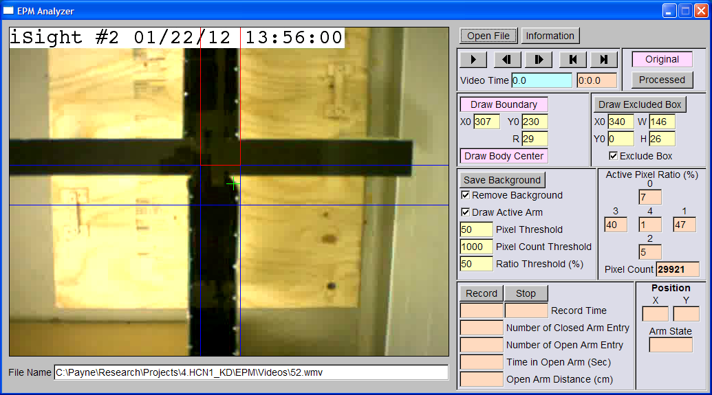
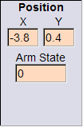
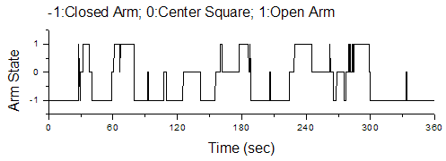

EPMAnalyzer is developed to evaluate video clips of elevated plus maze test (EPM), which is a test to evaluate the anxiety level of rodents [Wikepedia]. EPMAnalyzer counts the number of closed arm entry, the number of open arm entry, and the time in the open arms. It also records the coordinates of the body center and the resident arm at each time point. If you like to support the development of scientific programs in the Center for Learning and Memory, the University of Texas at Austin, please click here. Thanks.
Author: Payne Y. Chang (c)2012
E-mail: paynechang@gmail.com
Dr. Daniel Johnston's Lab
Center for Learning and Memory
The University of Texas at Austin
Analysis in Action
Elevated Plus Maze
To start EPMAnalyzer, double-click "EPMAnalyzer.ext". You will see the following user interface. To quit the program, press "Esc" on your keyboard.
To display EPMAnalyzer information, click "Information" button. You will see a pop-up window displays the information. To close this window, click "Close" button.
To open a video file, click "Open File" button. Select the video file and click "OK" button. EMPAnalyzer will display the first frame of the video file.

By default, EPMAnalyzer displays the boundary. The boundary is in blue. To hide the boundary, uncheck "Draw Boundary" button.
By default, the vertical arms are closed arms. The horizontal arms are open arms.
To move the boundary to the left or the right, move the cursor to "X0" box, click and hold the left button and drag to the left or the right.
To move the boundary to the top or the bottom, move the cursor to "Y0" box, click and hold the left button and drag to the left or the right.
To decrease or increase the width of the arm, move the cursor to "R" box, click and hold the left button and drag to the left or the right.
After properly setting the boundary, the interface should look like the following.
In some rare cases, you might want to exclude an area from analysis.
To turn on this fuction, check "Exclude Box" box.
To display the excluded area, check "Draw Excluded Box" button. The excluded box is shown in cyan.
To move the excluded area to the left or the right, move the cursor to "X0" box, click and hold the left button, drag to the left or the right.
To move the excluced area to the top or the bottom, move the cursor to "Y0" box, click and hold the left button, drag to the left or the right.
To reduce or increase the width of the excluded area, move the cursor to "W" box, click and hold the left button, drag to the left or the right.
To reduce or increase the height of the excluded area, move the cursor to "H" box, click and hold the left button, drag to the left or the right.
There are two display modes. When "Original" is selected, EPMAnalyzer displays the original video. When "Processed" is selected, the processed data is displayed.
Internally, EPMAnalyzer converts RGB data to 8-bit gray scale data. For each pixel, the value range is 0~255. The following image displays a processed frame. You might notice that the excluded box covers the time and the area is black.
The following is the steps in image processing:
To save the current frame as the background, click "Save Background" button. If "Remove Background" box is checked and the display mode is in "Processed", the screen will become black since the processed value of each pixel should be zero.
To reduce or increase "Pixel Threshold", move the cursor to "Pixel Threshold" box, click and hold the left button, drag to the left or the right.
The body center is calculated as the center of all active pixels. The x and y coordinates are the averages of x and y coordinates of all active pixels, respectively.
To display the body center, check "Draw Body Center" button. The body center is indicated by a green cross. During recording, the coordinates of the body center and the arm state are displayed in "Position" box. The unit of X and Y coordinates is cm. (0, 0) corresponds to the center of the maze. Arm state indicates what type of arm the body center is in (-1: closed arm; 0: center square; 1: open arm).

To determine which area the animal is in, EPMAnalyzer counts active pixels in each area, calculates the total pixel count, and calculates the active pixel ratio of each area (number of active pixels in one area / total active pixels). The ratios and the total pixel count are displayed in "Active Pixel Ratio (%)" box. In the following example, there are 3996 active pixels in the frame. 53% of the activated pixels are in the top arm. To display the occupied arm, check "Draw Active Arm" box and the occupied arm is in red.
There are two parameters related to the determination of occupied arm. The first is the ratio threshold, which specifys that the animal is considered being in a specific arm when the active pixel ratio is larger than this threshold. By default, the ratio threshold is 50%. To reduce or increase this threshold, move the cursor to "Ratio Threshold (%)" box, click and hold the left button, drag to the left or the right. When none of the five areas has active pixel ratio larger than this threshold, the animal is considered as being in the previous occupied arm.
In some frames, especially when the animal is out of the camera field or near the end of the closed arms, the number of active pixels could be zero or very small. This situation can lead to incorrect determination of the occupied arm. To avoid this, EPMAnalyzer considers the data are reliable and suitable for analysis when the total active pixel count is larger than the pixel count threshold. If the total pixel count is less than this threshold, EPMAnalyzer considers the animal is still in the previous occupied arm. To reduce or increase the pixel count threshold, move the cursor to "Pixel Count Threshold" box, click and hold the left button, drag to the left or the right.
To play the video, click ">" button. To pause the video, click ">" button again. EPMAnalyzer displays and analyzes one frame in 0.1 second interval.
To move one frame backward, click "<|" button. To move one frame forward, click "|>" button.
To go to the first frame, click "|<" button. To go to the last frame, click ">|" button.
The video time is displayed in the cyan box as seconds and the orange box as min:sec.
You can move the cursor to the cyan box, click and hold the left button, drag to the left or the right to go backward or forward.
To start recording, click "Record" button. To stop the recording, click "Record" button again or click "Stop" button. By default, EPMAnalyzer will analyze the video for 6 minutes if the recording is not stopped by the user.
The record time in seconds or min:sec format is displayed in one of "Record Time" boxes.
"Number of Closed Ary Entry" and "Number of Open Arm Entry" are displayed.
The value in "Time in Open Arm (Sec)" box is the total duration when the active pixel ratio in either one of the open arm is larger than the pixel ratio threshold.
The distance travelled in the open arms is also displayed in "Open Arm Distance (cm)" box.
After analyzing the video, EPMAnalyzer generates a txt file containing the record time, the x coordinate, the y coordinate, and the arm state. The following is a snapshot of the first few lines in an example.
Time X Y Arm 0 0.478428 -12.4721 -1 0.1 0.512983 -12.5398 -1 0.2 0.52587 -12.3777 -1 0.3 0.503302 -12.1689 -1 0.4 0.356756 -11.1223 -1 0.5 0.180037 -10.5322 -1
These data can be imported to other programs to display the body center trace or the arm state vs. time. The following figures are examples.
